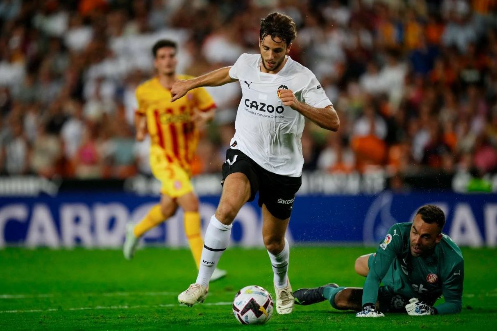
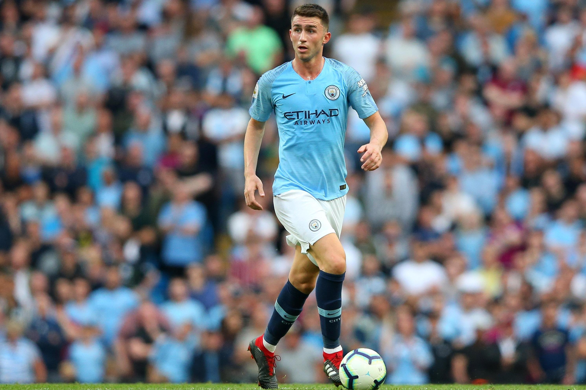

ГЛАВНЫЕ НОВОСТИ:

Будущее Нико Гонсалеса неопределенно. Если Бускетс уйдет, а Нико покажет хорошие результаты к концу сезона, каталонский клуб может предложить ему возможность стать важным игроком опорной зоны.

«Барселона» доверяет Рафинье как игроку настоящего и будущего, учитывая интерес со стороны «Ньюкасла» и «Челси». Он тоже любит клуб.

Эмерик Лапорт хочет присоединиться к «Барселоне» этим летом! Первые переговоры уже состоялись. Хави любит его, и клуб заинтересован в его подписании.
Таблица Ла Лиги
| Команда | Очки | |
|---|---|---|
| 1 | Барселона | 65 |
| 2 | Реал Мадрид | 56 |
| 3 | Атлетико | 48 |
| 4 | Реал Сосьедад | 45 |
| 5 | Бетис | 42 |
| 6 | Вильярреал | 38 |
| 7 | Атлетик | 36 |
| 8 | Райо Вальекано | 35 |
| 9 | Осасуна | 34 |
| 10 | Мальорка | 32 |
| 11 | Сельта | 31 |
| 12 | Жирона | 30 |
| 13 | Севилья | 28 |
| 14 | Кадис | 28 |
| 15 | Вальядолид | 28 |
| 16 | Эспаньол | 27 |
| 17 | Валенсия | 26 |
| 18 | Хетафе | 29 |
| 19 | Альмерия | 26 |
| 20 | Эльче | 13 |
2